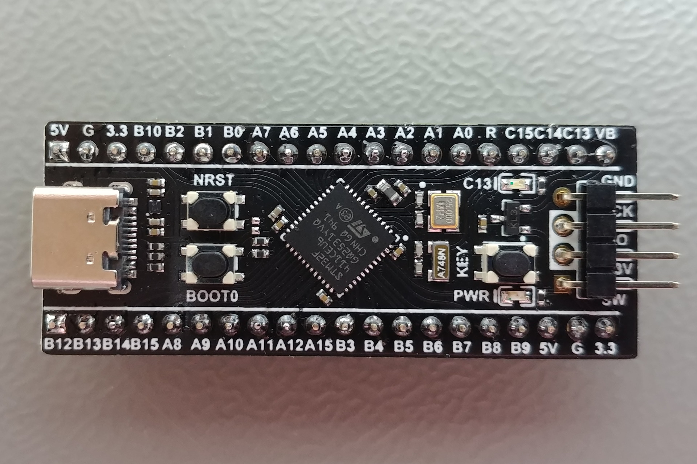
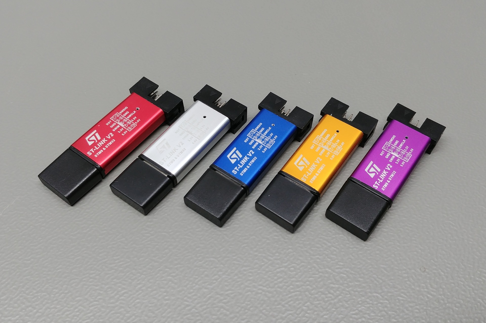
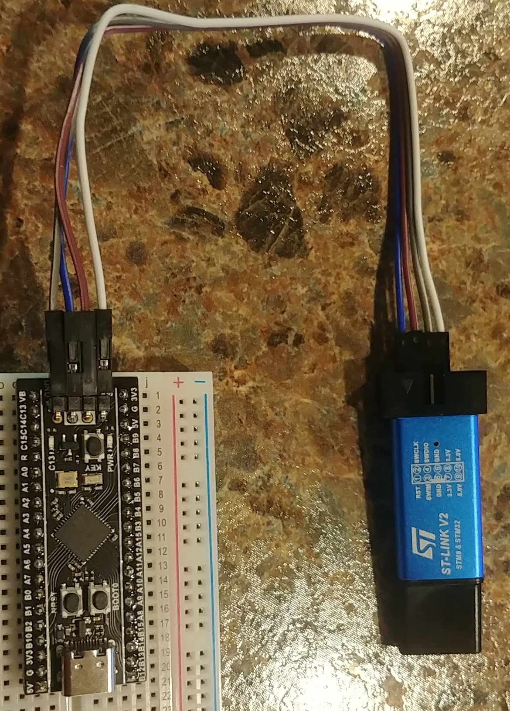

Welcome to MIMIC
Mimic is a framework designed to bridge the gap between software development and physical hardware by emulating sensor behavior. It allows a host computer to interact with a microcontroller that "mimics" the protocols and data streams of actual hardware peripherals.
Core Concept
The primary purpose of Mimic is to provide a functional replacement for sensors during development or when hardware is unavailable. The system uses a dedicated microcontroller to act as a sensor proxy, supporting multiple communication protocols including I2C, SPI, UART, RS485, and RS232.
Hardware Platform
Mimic Firmware is developed specifically for the STM32F411CEU6 (Black Pill) development board. It is designed to run exclusively on this platform to ensure consistent peripheral timing and protocol accuracy.
System Architecture
The framework is divided into three distinct layers:
1. Mimic Firmware
Written in C, the firmware resides on the STM32 MCU. It is responsible for parsing commands received from the host computer and executing them on the hardware level. It manages the low-level peripheral configuration required to emulate different sensor interfaces.
2. Mimic Bridge & CLI
The Mimic Bridge is a Domain Specific Language (DSL) implemented in Python. It provides the interface for the computer to communicate with and program the Mimic MCU in real-time.
Accompanying the bridge is the Mimic CLI, which allows for direct hardware interaction. You can use the CLI to:
- Manually control the MCU pinout.
- Query the real-time status of GPIO pins.
- Execute protocol commands directly from the terminal.
3. Mimic Sensors
Mimic Sensors contains the actual emulation logic for specific hardware. This is where the behavior of a sensor (such as an MPU6050 or BMP280) is defined. This layer is designed for community contribution, allowing users to write and add new sensor profiles to the ecosystem.
Select a topic from the sidebar to explore the documentation for each specific module.
Wiring & Connectivity
This chapter details the physical connections required to interface the STM32F411 (Black Pill) with your host machine and external hardware master devices.
1. Hardware Overview
The STM32F411CEU6 Black Pill is the core processing unit for Mimic. Below is a real-world view of the board's top side, showing the MCU, crystal, and breakout pins.

2. Programming Interface (ST-Link v2)
The primary method for deploying Mimic Firmware is via an ST-Link v2 programmer. The real-world hardware typically comes in a small USB-stick form factor as shown below.

Connection Table
| ST-Link Pin | Black Pill Pin | Description |
|---|---|---|
| 3.3V | 3.3V | Target Power |
| GND | GND | Common Ground |
| SWDIO | DIO / PA13 | Data Line |
| SWCLK | CLK / PA14 | Clock Line |

3. Host Communication via TTL (UART2)
In cases where the USB-C port is not used for host communication, a USB-to-TTL converter (typically using the CP2102 chip) can be connected to UART2 to provide full CLI control.
Bridge Connection (TTL)
| Converter Pin | Black Pill Pin | Description |
|---|---|---|
| TX | PA3 (RX2) | Data from Host to MCU |
| RX | PA2 (TX2) | Data from MCU to Host |
| GND | GND | Common Ground |
4. Peripheral Hardware Mapping
To emulate sensors correctly, ensure your Master device (e.g., Raspberry Pi or Arduino) is connected to the following hardware ports on the Black Pill:
UART (GPS Emulation)
- TX (Master) -> RX (PA10)
- RX (Master) -> TX (PA9)
- GND -> GND
I2C (MPU6050 Emulation)
- SCL: PB6
- SDA: PB7
SPI (BMP280 Emulation)
- SCK: PA5
- MISO: PA6
- MOSI: PA7
- CS: PA4
Environment Setup & Getting Started
This guide provides the technical requirements and procedures for setting up the Mimic environment, compiling the firmware, and establishing communication with the STM32 hardware.
Maintainer: Karthik Sarvan
1. Required Hardware
To deploy and utilize the Mimic framework, the following hardware is required:
- MCU Development Board: STM32F411CEU6 (Black Pill).
- Programmer: ST-Link V2 (USB dongle).
- Peripherals (Optional): Jumper wires and standard sensors for emulation testing (e.g., MPU6050, BMP280, GPS).
2. Cloning the Source
Clone the primary firmware repository from the Aegion Dynamic organization:
git clone https://github.com/aegion-dynamic/Mimic-Firmware.git
cd Mimic-Firmware/STM32
3. Compiling the Firmware
Compilation requires the arm-none-eabi-gcc toolchain and the make utility.
Execute the build process:
make
The build system will generate mimic.bin, mimic.hex, and mimic.elf binaries within the build/ directory.
4. Hardware Injection
- Interface the ST-Link V2 with the Black Pill:
3.3V->3.3VGND->GNDSWDIO->DIOSWCLK->CLK
- Connect the ST-Link to your host machine.
- Deploy the binary using the
st-flashutility:
st-flash write build/mimic.bin 0x8000000
Note: After successful deployment, disconnect the ST-Link and connect the Black Pill directly via USB-C to begin host communication.
5. Verification: Onboard Diagnostics
Once flashed, verify the bridge communication using the Python client. The onboard LED (mapped to PC13) serves as the default diagnostic indicator.
Ensure the Python environment is configured:
pip install mimic-fw
Initialize the interactive hardware shell:
mimic
Execute the following commands to test GPIO control:
> PIN_HIGH PC13
OK
> PIN_LOW PC13
OK
If the onboard LED responds to these commands, the Mimic Hardware Bridge is correctly initialized and ready for sensor emulation.
System Architecture
The Mimic framework bridges a host computer to physical hardware peripherals. The core architecture relies on an STM32-based hardware component running the Mimic Firmware, connected to a Python-based host bridge over a serial protocol.
High-Level Architecture
The following block diagram illustrates the flow of data from the host machine to the hardware peripherals:
%%{init: {
'theme': 'base',
'themeVariables': {
'primaryColor': '#1a1a2e',
'primaryTextColor': '#ffffff',
'primaryBorderColor': '#3a3a5c',
'lineColor': '#5a5a7a',
'secondaryColor': '#16213e',
'tertiaryColor': '#0f3460',
'fontFamily': 'Space Mono, monospace',
'fontSize': '13px',
'noteBkgColor': '#1a1a2e',
'noteTextColor': '#ffffff'
},
'flowchart': {
'padding': 24,
'nodeSpacing': 50,
'rankSpacing': 50,
'curve': 'basis'
}
}}%%
graph TD
classDef host fill:#1b3a4b,stroke:#4a90a4,stroke-width:1.5px,color:#e0e0e0
classDef core fill:#4a2040,stroke:#9b4dca,stroke-width:2px,color:#ffffff
classDef iface fill:#2d4a22,stroke:#6dae4f,stroke-width:1.5px,color:#e0e0e0
classDef sensor fill:#4a3520,stroke:#d4915a,stroke-width:1.5px,color:#e0e0e0
CLI["Mimic CLI"]:::host
PyLib["MimicBridge Library"]:::host
Sensors["MimicSensors Modules"]:::host
Core["Mimic Firmware Core"]:::core
I2C["I2C Emulation"]:::iface
SPI["SPI Emulation"]:::iface
UART["UART Interface"]:::iface
GPIO["GPIO Control"]:::iface
MPU["MPU6050"]:::sensor
BMP["BMP280"]:::sensor
GPS["GPS NMEA"]:::sensor
LED["LED / GPIO"]:::sensor
CLI --> PyLib
Sensors --> PyLib
PyLib -->|USB CDC| Core
Core --> I2C
Core --> SPI
Core --> UART
Core --> GPIO
I2C --> MPU
SPI --> BMP
UART --> GPS
GPIO --> LED
How It Works
- Python Bridge: The user sends a command (e.g.,
PIN_HIGH PC13orsimulate mpu6050) using the Python library (mimic-fw). - Serial Transmission: The
MimicBridgetranslates this into a compact string protocol and transmits it over USB. - Firmware Execution: The STM32F411 micro-controller interprets the packet. It bypasses heavy abstractions (like standard HALs where necessary) to maintain high-precision, low-latency emulation logic.
- Peripheral Activity: Signal levels are changed on GPIOs, or dummy register shadows are updated to fool the Master device into thinking a real MPU6050 or BMP280 is connected.
Command Execution Flow
%%{init: {
'theme': 'base',
'themeVariables': {
'primaryColor': '#1b3a4b',
'primaryTextColor': '#ffffff',
'primaryBorderColor': '#4a90a4',
'lineColor': '#5a5a7a',
'secondaryColor': '#4a2040',
'tertiaryColor': '#2d4a22',
'fontFamily': 'Space Mono, monospace',
'fontSize': '13px'
}
}}%%
sequenceDiagram
box #1b3a4b Host Machine (Python)
participant User as User / Script
participant Bridge as Python Bridge
end
box #4a2040 STM32 Core
participant MCU as STM32 Firmware
end
box #2d4a22 Peripherals
participant HW as Hardware Pins
end
User->>Bridge: bridge.pin_high('PC13')
Bridge->>MCU: "PIN_HIGH PC13\n"
Note over MCU: Parse Command
MCU->>HW: Set PC13 to HIGH
HW-->>MCU: Pin State Updated
MCU-->>Bridge: "OK\n"
Bridge-->>User: True
Firmware Overview
The MimicFirmware is the core embedded component of the Mimic system. It runs on an STM32F411CEU6 (BlackPill) microcontroller and is responsible for interpreting host commands, driving peripheral emulation, and maintaining real-time communication with the Python bridge.
Architecture
The firmware is structured as a bare-metal application with the following core modules:
- Command Parser — Receives and tokenizes incoming serial packets from the USB CDC interface or the secondary UART2 (TTL) bridge.
- GPIO Controller — Manages pin state changes for digital output, input reading, and interrupt-driven monitoring.
- I2C Slave Engine — Emulates I2C slave devices by shadowing register maps and responding to master transactions.
- SPI Slave Engine — Handles SPI communication for sensors like the BMP280.
- UART Bridge — Provides NMEA sentence streaming for GPS emulation.
Execution Model
The firmware operates on a single-threaded super-loop model with interrupt-driven peripherals:
- The main loop polls the USB CDC receive buffer for incoming commands.
- Commands are parsed and dispatched to the appropriate peripheral handler.
- Hardware timers and DMA channels handle time-critical operations independently of the main loop.
Memory Layout
The STM32F411 provides 512KB of Flash and 128KB of SRAM. The firmware memory is partitioned as:
- Flash (0x08000000) — Application code and constant data.
- SRAM (0x20000000) — Stack, heap, and peripheral register shadows.
Build Targets
The firmware supports multiple build configurations:
make— Default release build with optimizations.make debug— Debug build with symbols and no optimization.make flash— Build and flash in one step (requires ST-Link).
GPIO Mapping
Overview
GPIO Mapping defines how the logical pins in the Mimic firmware are connected to the physical pins on the STM32F411 Black Pill. This mapping ensures that commands from the host reach the correct physical hardware.
Pin Configuration
The firmware uses a standard mapping for peripheral functions:
- I2C1: SCL (PB6), SDA (PB7)
- SPI1: SCK (PA5), MISO (PA6), MOSI (PA7), CS (PA4)
- UART1 (GPS): TX (PA9), RX (PA10)
- UART2 (Bridge): TX (PA2), RX (PA3)
- User LED: PC13
Custom Mapping
While the default mapping is recommended, users can modify the gpio_map.h file in the firmware source to reassign pins if their specific hardware setup requires it.
Interrupt Processing
Overview
The Mimic firmware uses interrupt-driven processing to handle time-critical peripheral events. This ensures that protocol timing for I2C and SPI remains consistent even when the main loop is busy parsing commands from the host.
Implementation
- External Interrupts (EXTI): Used for monitoring GPIO state changes and triggering protocol responses.
- Peripheral Interrupts: Dedicated handlers for I2C and SPI bus events (Start, Stop, Address Match, Data Transmit/Receive).
- Prioritization: Critical bus timing interrupts are assigned higher priority to prevent data loss or bus timeouts.
Execution Flow
- A hardware event (e.g., I2C Start condition) triggers a peripheral interrupt.
- The CPU pauses the main loop and executes the associated Interrupt Service Routine (ISR).
- The ISR handles the immediate hardware requirement (e.g., loading a data register).
- Control returns to the main loop to handle higher-level logic.
Memory Management
Overview
Mimic manages memory by partitioning the STM32's internal SRAM for different system requirements. The goal is to provide enough space for large sensor register shadows while maintaining a stable stack for firmware execution.
Memory Partitioning
- Static Allocation: Core system structures and peripheral configurations are allocated at boot time.
- Register Shadows: A dedicated section of SRAM is used to store the virtual register maps for emulated sensors (MPU6050, BMP280, etc.).
- Command Buffers: Circular buffers handle incoming and outgoing serial data to prevent blocking during host communication.
Memory Layout
| Section | Description |
|---|---|
| Flash | Persistent storage for firmware code and default sensor configurations. |
| SRAM | Runtime data, including sensor registers and communication buffers. |
| Stack | Used for local variables and interrupt context saving. |
Build System
Overview
The Mimic firmware uses a standard Makefile-based build system designed for the GNU Arm Embedded Toolchain. This ensures that the code can be compiled and deployed from any standard Linux, macOS, or Windows terminal.
Requirements
To build the firmware, you need:
- arm-none-eabi-gcc: The cross-compiler for ARM Cortex-M microcontrollers.
- make: The build automation tool.
- st-flash (or OpenOCD): For uploading the binary to the STM32 board.
Compilation Commands
make— Compiles the source files and generates the binary image.make clean— Removes all compiled objects and binaries.make flash— Compiles and uploads the code to the connected STM32 via an ST-Link.
Output Files
The build process produces several files in the build/ directory:
mimic.bin— The raw binary image for flashing.mimic.elf— The executable file containing debug symbols.mimic.hex— The Intel Hex format version of the binary.
Peripheral Control
Overview
Mimic provides direct control over the STM32's hardware peripherals through its bridge protocol. This allows the host to configure and interact with low-level hardware without writing new C code.
Supported Peripherals
- GPIO: Read and write digital states on any available MCU pin.
- I2C: Emulate slave devices or act as a master to control external hardware.
- SPI: Support for high-speed sensor emulation and data streaming.
- UART: Stream serial data or act as a bridge between different serial protocols.
Control Logic
Peripherals are managed by a dedicated driver layer in the firmware. When a command is received from the host (e.g., PIN_HIGH PC13), the firmware identifies the correct peripheral register and updates it to reflect the desired state.
Configuration
Default peripheral mappings are defined in the firmware's header files. These can be overridden at runtime using the CLI or Python API to adapt to different hardware setups.
I2C Timing & Speed
Overview
Accurate timing is critical for I2C communication. Mimic provides fine-grained control over the bus frequency and signal timing to ensure compatibility with a wide range of master devices.
Supported Speeds
- Standard Mode: 100 kHz
- Fast Mode: 400 kHz
- Fast Mode Plus: Up to 1 MHz (hardware dependent)
Timing Accuracy
The firmware utilizes the STM32's internal peripheral clock to generate I2C signals. By configuring the rise and fall time parameters, the system can emulate the characteristics of different sensor hardware.
Clock Stretching
If the host bridge is slow to provide data for a transaction, the firmware can use I2C clock stretching to pause the master until the data is ready, preventing bus errors.
SPI Logic & Protocol
Overview
SPI is a high-speed synchronous serial protocol. Mimic emulates SPI slave devices by monitoring the Chip Select (CS) and Clock (SCK) lines and responding with data on the MISO line.
Supported Modes
Mimic supports all four standard SPI modes:
- Mode 0: CPOL=0, CPHA=0
- Mode 1: CPOL=0, CPHA=1
- Mode 2: CPOL=1, CPHA=0
- Mode 3: CPOL=1, CPHA=1
Transaction Handling
When the CS line is pulled low, the firmware prepares for a transaction. It uses hardware interrupts to ensure that data is shifted out on the MISO line in perfect sync with the master's clock signal.
UART Data Flow
Overview
The UART interface is used for both host communication (USB CDC) and peripheral emulation (e.g., GPS sentences). Mimic manages the flow of data to ensure that serial buffers do not overflow.
Host Communication
Data from the host can be received via:
- USB-C Port: Using the USB CDC protocol.
- UART2 (TTL): Using PA2 (TX) and PA3 (RX) for external TTL control.
The firmware uses a circular buffer to store incoming characters until they can be parsed by the command engine.
Peripheral Emulation
When emulating a UART device like a GPS module:
- The firmware generates data packets (e.g., NMEA sentences).
- These packets are transmitted via UART1 using the physical TX pin (PA9).
- A background process ensures that data is streamed at the correct baud rate (typically 9600 for GPS).
Command Line Interface (CLI)
The Mimic framework provides a standardized CLI and Python library structure (mimic-fw) to interface seamlessly with Mimic hardware.
The CLI is powered by the Python click module, establishing a centralized entry point. Running mimic without arguments attempts an automatic discovery of the connected board and enters an interactive Gruvbox-themed shell.
Basic Usage
Auto-Discovery Shell
Launch the shell and let the library automatically detect the connected BlackPill:
mimic
Specifying Hardware Ports
If you have multiple devices connected, specify the USB port explicitly:
# Linux/macOS
mimic --port /dev/ttyUSB0
# Windows
mimic --port COM3
Common Board Commands
Once inside the interactive terminal, you can manually type out protocol instructions to the STM32 board. Some common commands include:
STATUS- Retrieves the current MCU system state.VERSION- Retrieves firmware build date and internal version.PIN_HIGH [PIN]- Configures the specified GPIO pin (e.g.PC13) to logical HIGH.PIN_LOW [PIN]- Configures the specified GPIO pin to logical LOW.RESET- Soft-reboots the hardware.
Quick Simulations
The CLI supports rapid spawning of Mock Sensor data. This is useful if you are developing another application on an external Master device (e.g., Raspberry Pi) and need the BlackPill to pretend to be a sensor.
# Starts mimicking an MPU6050 Accelerometer
mimic simulate mpu6050
# Starts mimicking a BMP280 over I2C instead of SPI
mimic simulate bmp280 --protocol i2c
# Emulates a running GPS over UART NMEA sentences
mimic simulate gps
Python Bridge: Serial
Overview
The Serial Bridge is the primary communication link between the host computer and the Mimic hardware. It uses the USB CDC (Communication Device Class) interface to transmit commands and receive sensor data.
Communication Protocol
Mimic uses a text-based protocol for simplicity and ease of debugging. Each command is sent as a string terminated by a newline character.
- Request:
PIN_HIGH PC13\n - Response:
OK\n
Serial Configuration
The bridge automatically configures the serial port with the following settings:
- Baud Rate: 115200 (default)
- Data Bits: 8
- Parity: None
- Stop Bits: 1
Usage in Python
The MimicBridge class abstracts the serial communication. You can connect via the USB-C port (typically ttyACM0) or a TTL adapter on UART2 (typically ttyUSB0):
from mimic import MimicBridge
# Connect via onboard USB CDC
bridge = MimicBridge(port='/dev/ttyACM0')
# OR Connect via UART2 (TTL Adapter)
# bridge = MimicBridge(port='/dev/ttyUSB0')
bridge.pin_high('PC13')
Python Bridge: Async
Overview
For applications requiring high-frequency data logging or simultaneous control of multiple peripherals, Mimic provides an asynchronous API based on Python's asyncio library.
Why Use Async?
Traditional serial communication is synchronous, meaning the program waits for a response after every command. This can limit performance during complex simulations. The Async Bridge allows you to:
- Send multiple commands without waiting for immediate responses.
- Continuously stream sensor data in the background.
- Build responsive user interfaces that don't freeze during hardware I/O.
Usage Example
import asyncio
from mimic import AsyncMimicBridge
async def main():
bridge = AsyncMimicBridge(port='/dev/ttyUSB0')
await bridge.connect()
# Task 1: Blink an LED
asyncio.create_task(bridge.blink('PC13', interval=0.5))
# Task 2: Read sensor data
while True:
data = await bridge.read_sensor('mpu6050')
print(f"Accel: {data}")
await asyncio.sleep(0.1)
asyncio.run(main())
HIL Synchronization
Overview
Hardware-in-the-Loop (HIL) synchronization ensures that the simulation time on the host computer is aligned with the physical clock on the Mimic hardware. This is crucial for accurate sensor emulation and control system testing.
Mechanism
Mimic uses a heartbeat-based synchronization protocol:
- The hardware MCU generates a stable clock signal or heartbeat packet.
- The Python bridge monitors this heartbeat to adjust its internal timing.
- If the host falls behind (e.g., due to system load), it can request a state synchronization from the MCU to catch up.
Key Features
- Drift Correction: Automatically compensates for the small differences between the host and MCU oscillators.
- Timestamping: Every packet sent from the hardware includes a high-resolution timestamp (in microseconds) relative to the system boot.
- Latency Monitoring: The bridge measures the round-trip time of commands to provide an estimate of the communication latency.
Real-Time Diagnostics
Overview
Mimic includes a diagnostic layer that monitors the health and performance of the system in real-time. This helps in identifying communication issues, protocol errors, or hardware failures during development.
Monitored Metrics
- Bus Load: The percentage of available bandwidth being used on the I2C or SPI bus.
- Packet Loss: The number of commands sent by the host that failed to receive a valid acknowledgement.
- Timing Jitter: Variations in the execution time of periodic tasks (e.g., sensor data updates).
- MCU Temperature: The internal temperature of the STM32 chip.
Diagnostic Commands
You can query the diagnostic state using the CLI:
# Get a summary of the system health
mimic diagnostics status
# Monitor bus activity in real-time
mimic diagnostics monitor --bus i2c1
Logging
Diagnostic data can be exported to a CSV file or streamed to a dashboard for long-term analysis of hardware stability.
Sensors Overview
The MimicSensors package provides Python-based sensor emulation modules. Each module simulates the behavior and register map of a real-world sensor, allowing the Mimic hardware bridge to present itself as a genuine device on I2C, SPI, or UART buses.
Supported Sensors
| Sensor | Protocol | Description |
|---|---|---|
| MPU6050 | I2C | 6-axis accelerometer and gyroscope |
| BMP280 | SPI / I2C | Barometric pressure and temperature sensor |
| GPS (NMEA) | UART | GPS receiver outputting standard NMEA sentences |
Architecture
All sensor modules inherit from the AbstractSensorBase class, which provides:
- Register Map Management — A dictionary-based register shadow with read/write hooks.
- Data Generation — Configurable data patterns (static, sinusoidal, random, file-based).
- Update Loop — A timer-driven update mechanism that refreshes sensor values at configurable rates.
Quick Start
# Emulate an MPU6050 with default settings
mimic simulate mpu6050
# Emulate a BMP280 at a custom update rate
mimic simulate bmp280 --rate 100
# Stream GPS NMEA sentences
mimic simulate gps --trajectory default
Adding Custom Sensors
To create a new sensor module, extend AbstractSensorBase and implement the required methods:
- Define the register map
- Implement the data generation logic
- Register the sensor with the CLI plugin system
See the Abstract Sensor Base chapter for the full API reference.
Abstract Sensor Base
Overview
The AbstractSensorBase is a Python class that serves as the foundation for all sensor emulation modules in Mimic. It provides the core logic for managing register maps and handling protocol-specific transactions.
Core Responsibilities
- Register Shadowing: Maintains a virtual copy of the sensor's internal registers.
- Protocol Mapping: Defines how register reads/writes translate to physical I2C or SPI transactions.
- Data Generation Hooks: Provides methods for updating register values based on simulation logic (e.g., generating random noise for an accelerometer).
Key Methods
read_register(address): Returns the value currently stored in a virtual register.write_register(address, value): Updates a virtual register and triggers any associated side effects.update(): A periodic hook used to calculate new sensor data (e.g., incrementing a counter or reading from a data file).
Example Implementation
To create a new sensor, you simply need to inherit from this class and define your register map:
class MyCustomSensor(AbstractSensorBase):
def __init__(self):
super().__init__()
self.registers = {
0x00: 0x45, # Device ID
0x01: 0x00 # Data Register
}
MPU6050 Motion Sensor
Overview
The MPU6050 is a widely used 6-axis motion tracking device that combines a 3-axis gyroscope and a 3-axis accelerometer. Mimic emulates the I2C interface and register structure of this sensor, allowing you to test flight controllers or navigation algorithms without physical hardware.
Emulated Features
- Accelerometer: X, Y, and Z axis readings with configurable sensitivity.
- Gyroscope: Angular velocity readings for all three axes.
- Temperature: Internal die temperature register.
- Interrupts: Emulation of the Data Ready (DRDY) interrupt signal on a physical GPIO pin.
Default Configuration
| Parameter | Value |
|---|---|
| I2C Address | 0x68 (default) |
| Update Rate | 100 Hz |
| Resolution | 16-bit |
Usage
Start the MPU6050 emulation using the CLI:
mimic simulate mpu6050
Once running, the Mimic hardware will respond to I2C requests from a Master device as if a real MPU6050 were connected to pins PB6 (SCL) and PB7 (SDA).
MPU6050 Register Map
Overview
The MPU6050 emulation includes a complete register map that mimics the physical device. This allows your software to configure the "virtual" sensor just as it would a real one.
Key Registers
- 0x75 (WHO_AM_I): Returns
0x68to confirm device identity. - 0x3B - 0x40 (ACCEL_XOUT): 16-bit accelerometer readings.
- 0x43 - 0x48 (GYRO_XOUT): 16-bit gyroscope readings.
- 0x6B (PWR_MGMT_1): Controls the device's power state and clock source.
Interaction
When your master device writes to a register, Mimic updates the internal shadow. For example, writing to the GYRO_CONFIG register will change how the emulation calculates angular velocity data.
BMP280 Environment Sensor
Overview
The BMP280 is an absolute barometric pressure sensor designed for mobile applications. Mimic provides a highly accurate emulation of its SPI and I2C interfaces, supporting both pressure and temperature readings.
Emulated Features
- Pressure Sensing: Supports various oversampling modes to simulate different levels of noise and resolution.
- Temperature Sensing: Integrated temperature register for thermal compensation logic testing.
- Protocol Support: Can be configured to respond over either I2C or SPI depending on your test requirements.
Pin Mapping (SPI Mode)
- SCK: PA5
- MISO: PA6
- MOSI: PA7
- CS: PA4
Usage
Start the BMP280 emulation in SPI mode:
mimic simulate bmp280 --protocol spi
The emulation includes the factory calibration registers, ensuring that your driver's compensation formulas can be fully validated.
BMP280 Calibration Data
Overview
The BMP280 sensor requires specific calibration coefficients to convert raw pressure and temperature readings into meaningful engineering units. Mimic emulates these factory-programmed coefficients.
Calibration Coefficients
Upon power-up, the sensor's read-only memory (0x88 to 0xA1) contains 12 coefficients (dig_T1 to dig_P9).
Mimic provides default values for these coefficients that match a typical BMP280 device.
Why it Matters
Emulating these coefficients is essential for testing the compensation math in your driver. Without accurate calibration data, the raw pressure values cannot be converted to altitude or weather data correctly.
GPS Module (NMEA)
Overview
Mimic emulates a standard GPS receiver by streaming NMEA 0183 sentences over a UART interface. This allows you to test GPS parsing libraries and navigation software using simulated or pre-recorded trajectories.
Supported Sentences
The emulation module can generate the following standard NMEA messages:
- $GPRMC: Recommended Minimum Specific GNSS Data.
- $GPGGA: Global Positioning System Fix Data.
- $GPGSV: GNSS Satellites in View.
- $GPGLL: Geographic Position - Latitude/Longitude.
Trajectory Simulation
You can provide a CSV file containing a list of coordinates, and Mimic will "travel" along that path, updating the NMEA stream in real-time to match the simulated movement.
Usage
Start the GPS emulation on the default UART pins (PA9/PA10):
mimic simulate gps --trajectory my_trajectory.csv
GPS Trajectory Simulation
Overview
Mimic can simulate movement by following a pre-defined trajectory. This is useful for testing geofencing, navigation algorithms, or route tracking software.
Trajectory Formats
The Python bridge supports loading trajectories from:
- CSV Files: A simple list of Latitude, Longitude, and Altitude.
- KML/GPX Files: Standard map route formats.
- Dynamic Generation: Real-time generation of paths (e.g., circular or random walk) via Python scripts.
Real-Time Updates
As the simulation progresses, the Python bridge calculates the current position and sends the corresponding coordinates to the Mimic hardware. The hardware then packages these into NMEA sentences for the UART interface.
Troubleshooting
Common Issues
1. Board Not Detected
- Symptoms: The CLI returns
No device foundorAccess Denied. - Solutions:
- Check the USB-C cable connection.
- Ensure you have the correct permissions to access the serial port (on Linux, check if your user is in the
dialoutgroup). - Try specifying the port explicitly using
--port.
2. Protocol Timeouts
- Symptoms: I2C or SPI transactions fail with a "Timeout" error.
- Solutions:
- Verify that the Master device and Mimic share a common Ground (GND).
- Check the wiring between the Master device and the BlackPill pins.
- Reduce the bus speed on the Master device (e.g., lower the I2C frequency to 100kHz).
3. Firmware Flashing Fails
- Symptoms:
make flashreturns an error or fails to connect to the ST-Link. - Solutions:
- Ensure the ST-Link is properly connected to the SWD pins (3.3V, GND, SWDIO, SWCLK).
- Check that the ST-Link drivers are installed correctly on your host machine.
System Limitations
Overview
While Mimic is a powerful tool for hardware emulation, it is important to understand its physical and logical limits to ensure accurate testing.
Hardware Constraints
- Logic Level: Mimic operates at 3.3V. Interfacing with 5V systems without level shifters may damage the STM32.
- Max Frequency: I2C is limited to 1 MHz and SPI to approximately 20 MHz due to CPU and DMA overhead.
- Pin Current: GPIO pins have limited current sourcing/sinking capability (typically 20mA). Do not drive motors or high-power LEDs directly.
Emulation Limits
- Timing Jitter: While minimal, some jitter is inherent in a software-driven emulation compared to physical ASIC hardware.
- Register Set: Not all registers of every sensor are emulated. Only the most commonly used registers for data retrieval and configuration are typically supported.
- Analog Features: Mimic is primarily a digital protocol emulator. It does not natively emulate complex analog sensor behaviors (like ADC noise characteristics) unless specifically modeled in the Python layer.